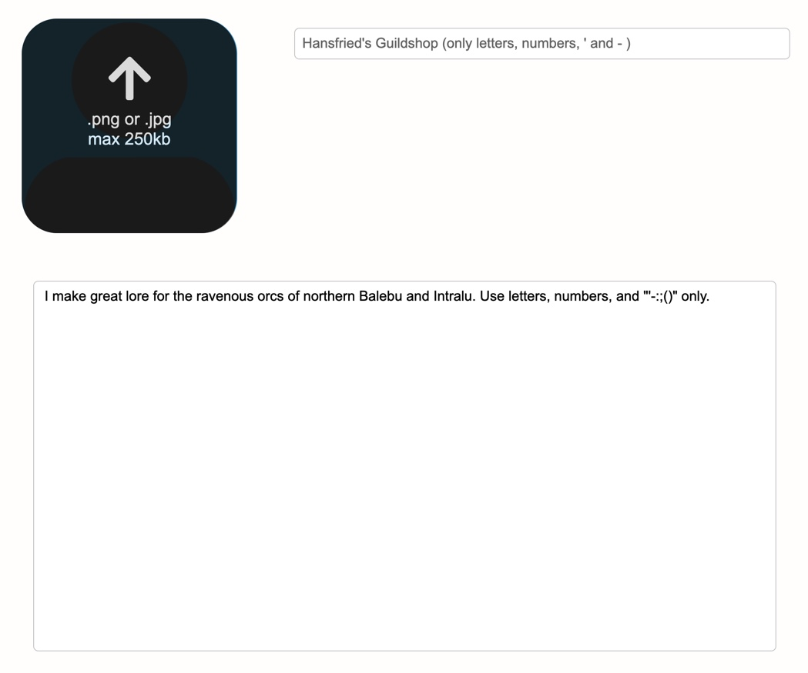

Many Isles Wiki - How To - Partnerships
Partnerships
The overlying "ideology" of the Many Isles is that of creation, and to that effect, we have founded the partnership program, with which any users can - fully for free - post their homebrews to a great and managed community.
View Partnership - Publish Product - How to Publish?

What's a Partnership?
Partnerships are the publishing entites in the Many Isles, the profile that posts cool homebrews. Most partnerships are actually companionships, because they post free content for free. Sometimes, a trader produces paid content, which allows them to make money out of it. That's a true partnership.
What are the Many Isles?
Advantages of Closing a Partnership
You might wonder what there is to gain from closing a partnership. Well, there's a few things.
Ability to Publish. Without a partnership, you can't publish.
Access to Merchant's Wagon. The Merchant's Wagon is a free tool with tons of cool resources, especially artwork and styles, reserved for Many Isles traders.
Trader Title. Even companionships grant their owner the Trader title, with all the cool features that go with it.
An Ear in the Pantheon. The Many Isles lives on its community, and as a trader, we'll pay special care to fit your needs. You can easily become part of the greater effort from this stepping stone on!
Founding a Partnership
Become a partner in these easy steps!
1. Make an Account
If you don't have an account yet, making one hardly takes more than a few minutes.
First, navigate to the page, and fill out the form.
Then, move on to find your fresh new account page! Make sure to check your inbox and spam folder for our welcome mail so you can confirm your account at the same time.
If anything is unclear, check out the Account article.
2. Submit Partnership

On your account page, you'll find a block reading "Become a Partner!". When you click on the "Become Partner" button, you'll find the page where you can submit your partnership.
You need to confirm your account's email to do so.
A partnership requires three pieces of information, all of which will be publicly visible.
Image. This will be your partnership's emblem, and should be similar to the one presented on your products. It must be jpg or png format, and of respectable dimensions.
Name. You partnership's name is permanent. Please use only letters and '.
Description. Describe your partnership and its goals!
Once you've submitted your partnership, wait for a short day or two, until it gets accepted and you can start publishing! You'll get an email when this happens, too.
Further Points
Terminology
Partnership is both the term for an entity publishing paid products, and the overhead term used for any publishing entity in the Many Isles. Companionship, meanwhile, exclusively referrs to entities wholly in the free section.
Partner and trader are equivocal terms referring to a person (such as you, hopefully) holding a partnership.